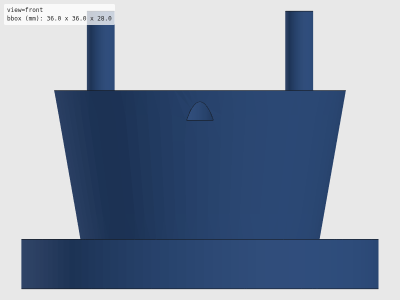
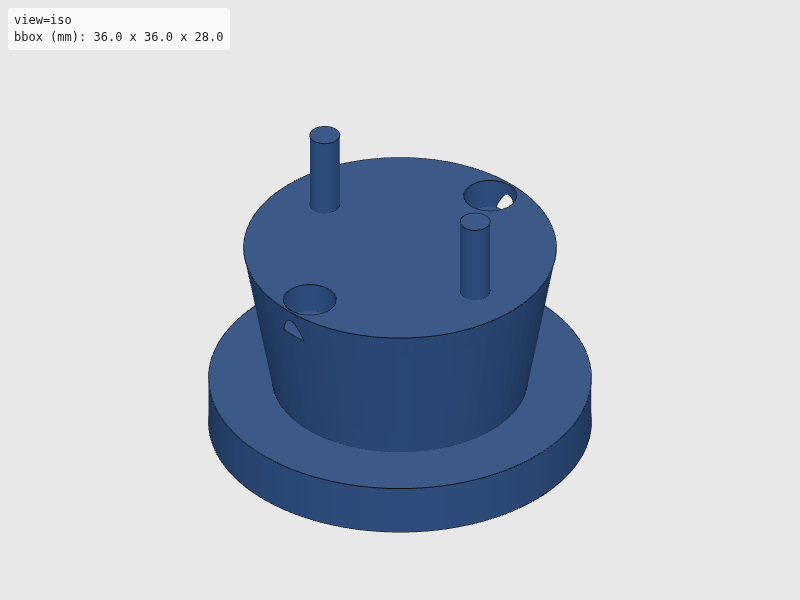
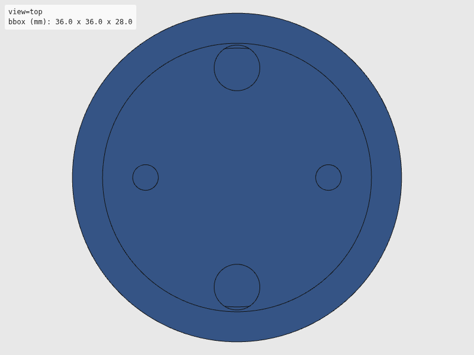
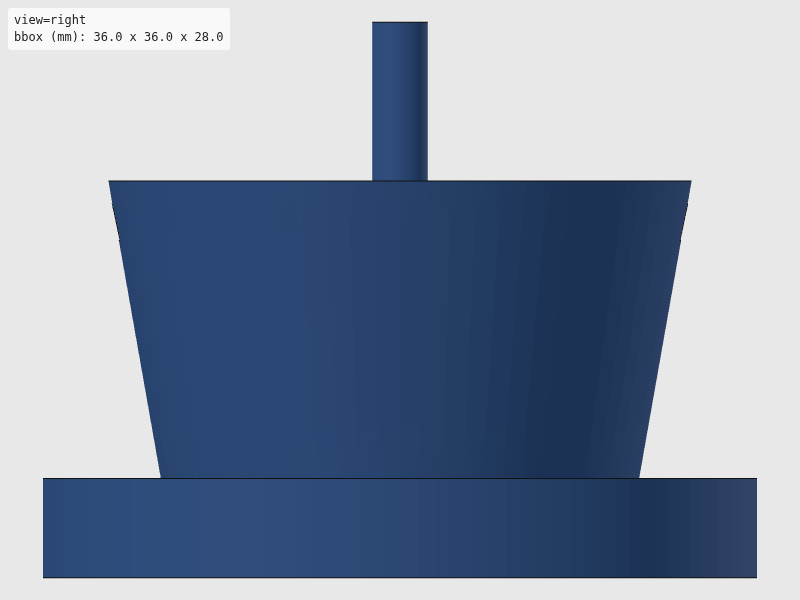

Verdict: review
Green is necessary, not sufficient: these checks cannot see local defects. Look at the render and decide.




The intent as written, for comparison with the renders. Not checked.
"""Tool changer components — robot-side and tool-side cones.
Based on Berkeley AutoLab passive modular tool changer design:
- Paper: https://goldberg.berkeley.edu/pubs/CASE2018-ron-tool-changer-submitted.pdf
- Repo: https://github.com/BerkeleyAutomation/RobotToolChanger
Key design: truncated cone (10° angle) + dowel pin alignment.
Usage:
uv run --group cad python hardware/cad/so101/tool_changer.py
Exports:
hardware/stl/so101/tool_cone_robot.stl (female, mounts on SO-101 wrist)
hardware/stl/so101/tool_cone_pipette.stl (male, attaches to pipette)
hardware/stl/so101/tool_cone_gripper.stl (male, attaches to gripper)
hardware/stl/so101/tool_cone_hook.stl (male, attaches to fridge hook)
hardware/svg/so101/tool_cone_robot.svg
hardware/svg/so101/tool_cone_male.svg
"""
import math
# Shared export helper (standalone mode)
import sys
from pathlib import Path
from build123d import Cone, Cylinder, Pos
sys.path.append(str(Path(__file__).resolve().parent.parent))
from util.export import export_part
sys.path.pop()
# --- Parameters (all in mm) ---
# SO-101 wrist flange (motor 5 horn mount)
WRIST_SCREW_PATTERN_RADIUS = 9.0
WRIST_SCREW_DIAMETER = 3.2 # M3 clearance
# Cone geometry (Berkeley design: 10° half-angle)
CONE_ANGLE_DEG = 10.0
CONE_HEIGHT = 15.0
CONE_TOP_RADIUS = 15.0
CONE_BOTTOM_RADIUS = CONE_TOP_RADIUS - CONE_HEIGHT * math.tan(math.radians(CONE_ANGLE_DEG))
# Dowel pins for alignment
DOWEL_DIAMETER = 3.0
DOWEL_HEIGHT = 8.0
DOWEL_OFFSET = 10.0
# Magnet pockets (5mm dia x 3mm deep neodymium)
MAGNET_DIAMETER = 5.0
MAGNET_DEPTH = 3.0
MAGNET_OFFSET = 12.0
# Base plate
BASE_THICKNESS = 5.0
BASE_RADIUS = CONE_TOP_RADIUS + 3
def build_robot_cone():
"""Build female (robot-side) cone adapter for SO-101 wrist.
Returns:
build123d solid with female cone.
"""
# Base cylinder
base = Cylinder(BASE_RADIUS, BASE_THICKNESS)
# Cut conical pocket (female)
cone = Pos(0, 0, -BASE_THICKNESS / 2 + 0.5) * Cone(
CONE_BOTTOM_RADIUS, CONE_TOP_RADIUS, CONE_HEIGHT
)
base = base - cone
# M3 mounting holes (4x at 90° intervals, offset 45°)
for i in range(4):
angle = math.radians(i * 90 + 45)
x = WRIST_SCREW_PATTERN_RADIUS * math.cos(angle)
y = WRIST_SCREW_PATTERN_RADIUS * math.sin(angle)
hole = Pos(x, y, 0) * Cylinder(WRIST_SCREW_DIAMETER / 2, BASE_THICKNESS + 1)
base = base - hole
# Dowel pin holes (2x, opposing)
for sign in [1, -1]:
z = BASE_THICKNESS / 2 - DOWEL_HEIGHT / 2
hole = Pos(sign * DOWEL_OFFSET, 0, z) * Cylinder(DOWEL_DIAMETER / 2, DOWEL_HEIGHT)
base = base - hole
# Magnet pockets (2x, opposing on Y axis)
for sign in [1, -1]:
z = -BASE_THICKNESS / 2 + MAGNET_DEPTH / 2
pocket = Pos(0, sign * MAGNET_OFFSET, z) * Cylinder(MAGNET_DIAMETER / 2, MAGNET_DEPTH)
base = base - pocket
return base
def build_male_cone():
"""Build male (tool-side) cone base.
Returns:
build123d solid with male cone.
"""
# Conical protrusion (0.3mm smaller for clearance)
cone = Cone(CONE_BOTTOM_RADIUS - 0.3, CONE_TOP_RADIUS - 0.3, CONE_HEIGHT)
# Base plate for tool attachment
base = Pos(0, 0, -CONE_HEIGHT / 2 - BASE_THICKNESS / 2) * Cylinder(BASE_RADIUS, BASE_THICKNESS)
result = cone + base
# Dowel pin protrusions (0.1mm smaller for fit)
for sign in [1, -1]:
z = CONE_HEIGHT / 2 + DOWEL_HEIGHT / 2
pin = Pos(sign * DOWEL_OFFSET, 0, z) * Cylinder(DOWEL_DIAMETER / 2 - 0.1, DOWEL_HEIGHT)
result = result + pin
# Magnet pockets (matching robot side)
for sign in [1, -1]:
z = CONE_HEIGHT / 2 - MAGNET_DEPTH / 2
pocket = Pos(0, sign * MAGNET_OFFSET, z) * Cylinder(MAGNET_DIAMETER / 2, MAGNET_DEPTH)
result = result - pocket
return result
def export_all() -> None:
"""Export all tool changer components."""
robot_cone = build_robot_cone()
export_part(robot_cone, "so101", "tool_cone_robot")
male_cone = build_male_cone()
export_part(male_cone, "so101", "tool_cone_pipette")
export_part(male_cone, "so101", "tool_cone_gripper")
export_part(male_cone, "so101", "tool_cone_hook")
export_part(male_cone, "so101", "tool_cone_male")
if __name__ == "__main__":
export_all()
| Check | Status | Detail |
|---|---|---|
| file_integrity | PASS | binary STL: header present, 3918 triangles, file length matches 84 + 50*n |
| watertight | PASS | watertight=True, winding_consistent=True, euler_number=-2 (reported only, not asserted — plan §7.2) |
| bbox | SKIP | no --envelope given |
| volume | SKIP | no --volume-band given |
| browser_load | PASS | viewer reported body[data-state]=rendered |
| render | PASS | 4 view(s) captured at 800x600 |